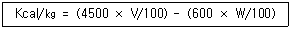
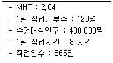
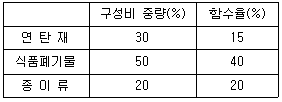
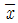
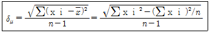
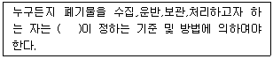

폐기물처리산업기사 (2002-05-26 기출문제)
1과목: 폐기물개론
1. 10m3 의 폐기물을 압축비 4로 압축하였을 때 압축후의 부피는?
- 1m3
- 1.5m3
- 2.5m3
- 4.0m3
(정답률: 알수없음)

2. 원소분석 결과로 부터 쓰레기의 발열량을 추정할 때 관련성이 없는 원소는?
- 탄소
- 인
- 산소
- 황
(정답률: 알수없음)
3. 분뇨에서 '분 : 뇨'의 고형물의 비는 대략 얼마인가?
- 21 : 1
- 14 : 1
- 7 : 1
- 3 : 1
(정답률: 알수없음)
4. 다음의 쓰레기통 형태중 수거효율이 가장 좋은 것은?
- 집안이동식
- 집밖이동식
- 벽면부착식
- 집밖고정식
(정답률: 알수없음)
5. 소각공정과 열분해공정을 비교하여 열분해공정에 첨가하여야 하는 공정으로 알맞은 것은?
- 폐열이용공정
- 분리, 정제, 세정, 저장공정
- 잔사처리공정
- 배기가스 처리공정
(정답률: 알수없음)
6. 쓰레기 발생량 조사 방법으로 알맞지 않은 것은?
- 직접계근법
- 성상분석계근법
- 적재차량계수분석
- 물질수지법
(정답률: 알수없음)
7. 전과정 평가(LCA)의 일반적 활용목적과 가장 거리가 먼 것은?
- 생활양식의 평가와 개선목표의 도출
- 폐기물 처리기술 개발,검토 및 평가
- 환경목표치 또는 기준치에 대한 달성도 평가
- 복수 제품간의 환경오염부하의 비교
(정답률: 알수없음)
8. 하수슬러지의 호기성 소화공법의 장점이 아닌 것은?
- 냄새가 적다.
- 혐기성 소화에 비하여 운전이 쉽다.
- 상등수의 BOD와 SS농도가 낮다.
- 동력비가 적게 든다.
(정답률: 알수없음)
9. 파쇄처리에 따른 비표면적의 증가효과와 가장 거리가 먼 것은?
- 소각처리시 연소효율의 향상
- 수거시 효율의 향상
- 열분해시 반응효율의 향상
- 퇴비화시 발효효율의 향상
(정답률: 알수없음)
10. 폐기물 처리 및 관리차원에서 사용되는 용어 중 3R 에 해당 되지 않는 것은?
- Recreation
- Recycle
- Reduction
- Reuse
(정답률: 알수없음)
11. 산소나 수증기가 없는 상태에서 간접가열에 의해 유기물질으로부터 기체, 액체, 고체 연료를 회수하는 기술은?
- Pyrolysis
- Gasification
- Wet Oxidation
- Hydrogasification
(정답률: 알수없음)
12. 80%의 수분을 함유하고 있는 초기슬러지 100kg을 건조 하여 수분함량을 50%로 만들었을 때 증발된 물의 양은?
- 20kg
- 30kg
- 40kg
- 60kg
(정답률: 알수없음)
13. 다음 발열량을 분석하는데 이용되는 추정식에 대한 설명으로 맞는 것은?

- 600은 물의 포화수증기압을 의미한다.
- V는 쓰레기 가연분의 조성비(%)이다.
- W는 회분의 조성이다.
- 이 식은 고위발열량을 나타낸다.
(정답률: 알수없음)
14. 어느 도시의 도시폐기물을 수거하여 조사한 결과가 다음과 같다. 1인 1일 폐기물 발생량은?

- 1.18 kg/인·일
- 1.59 kg/인·일
- 2.43 kg/인·일
- 2.90 kg/인·일
(정답률: 알수없음)
15. 현재 우리나라의 생활폐기물중 가장 많이 발생되는 것은?
- 종이류
- 음식쓰레기류
- 플라스틱류
- 섬유류
(정답률: 알수없음)
16. 500세대 1,500명 배출하는 쓰레기를 2일마다 수거하는데 적재용량 8m3 트럭으로 6대가 소요되었다. 쓰레기 밀도 207.6kg/m3 라면 1인당 1일 쓰레기발생량(kg)은?
- 2.32
- 3.32
- 4.23
- 5.23
(정답률: 알수없음)
17. 도시 생활쓰레기를 분류하여 다음 표와 같은 결과를 얻었다. 이 쓰레기의 함수율은?

- 20.5%
- 24.5%
- 28.5%
- 32.5%
(정답률: 알수없음)
18. 새로운 쓰레기 운송기술에 관한 설명으로 틀린 것은?
- 모노레일 수송 : 가설이 곤란하고 반송용노선이 필요하다.
- 컨베이어 수송 : 사용후 세정에 많은 물이 소요된다.
- 파이프라인 수송 : 쓰레기의 발생밀도가 높은 곳에서 현실성이 있다.
- 파이프라인 수송 : 장거리 이송이 곤란하고 투입구를 이용한 범죄나 사고 위험이 있다.
(정답률: 알수없음)
19. 채취한 폐기물시료 분석시 가장 먼저 진행하여야 하는 분석절차는?
- 절단 및 분쇄
- 건조
- 분류(가연성,불연성)
- 밀도측정
(정답률: 알수없음)
20. 함수율이 95.5%인 수박찌꺼기와 함수율 98%인 공정슬러지의 구분은?
- 수박찌꺼기 : 반액상폐기물, 공정슬러지 : 액상폐기물
- 수박찌꺼기 : 반액상폐기물, 공정슬러지 : 반액상폐기물
- 수박찌꺼기 : 액상폐기물, 공정슬러지 : 액상폐기물
- 수박찌꺼기 : 액상폐기물, 공정슬러지 : 반액상폐기물
(정답률: 알수없음)
2과목: 폐기물처리기술
21. 쓰레기 소각로에서 로의 열부하가 50,000Kcal/m3-시 이며 쓰레기의 저위발열량 600Kcal/Kg, 쓰레기중량 10,000Kg 이다. 로의 용량은? (단, 8시간 가동한다.)
- 10m3
- 15m3
- 20m3
- 25m3
(정답률: 알수없음)
22. 지하수가 침출수로 오염되었을 경우 침출수의 이동속도를 구하기 위해 A, B 지점에서 시추를 한 결과, 두 지점간의 지하수위의 차이가 2m 이고 두 지점간의 거리가 200m 인 경우 침출수의 이동속도는? (단, Darcy의 식을 이용하여 계산하시오. 토양의 투수계수는 10-3m/day, Darcy′ s eq : Q=KA(dh/di))
- 10-2m/day
- 10-4m/day
- 10-5m/day
- 10-7m/day
(정답률: 알수없음)
23. 유동층 소각로의 장점이라 할 수 없는 것은?
- 기계적 구동부분이 적어 고장율이 낮다.
- 가스의 온도가 낮으므로 과잉공기량이 적다.
- 로내의 온도의 자동제어와 열회수가 용이하다.
- 폐기물 투입시 파쇄등 전처리가 필요없다.
(정답률: 알수없음)
24. 폐기물을 고온 용융처리하는 방법에 대한 설명과 거리가 먼 것은?
- 일반소각처리방법보다도 시설규모가 적다.
- 다이옥신 등의 2차 오염물질 발생이 일반소각로보다 적다.
- 일반적으로 1100℃ 이상의 고열분위기에서 열처리 한다.
- 처리후에 발생하는 슬래그를 서냉하여 시멘트원료로 사용할 수 있다.
(정답률: 알수없음)
25. 무기성 고형화와 비교한 유기성 고형화에 관한 설명으로 틀린 것은?
- 수밀성이 매우 크며 다양한 폐기물에 적용 가능함
- 최종 고화체의 체적 증가가 다양함
- 상업화된 처리법의 현장자료가 다양함
- 고도의 기술이 필요하며 촉매,촉진제 등에 유해물질이 사용됨
(정답률: 알수없음)
26. CN이 함유된 폐액의 처리방법에 대한 설명이다. 바르게 설명되지 못한 사항은?
- 저농도(1,000mg/ℓ 이하)의 CN폐액의 경우는 전해 산화법을 적용, 처리하는 것이 보편적이다.
- 알칼리염소법의 최종생성물은 CO2와 N2이다.
- 알칼리염소법 1차 반응 pH는 10~10.5 정도가 적절하다.
- 산성탈기법은 가스의 처리가 문제가 된다.
(정답률: 알수없음)
27. 함수율이 85% 슬러지 50ton과 함수율이 98%인 슬러지를 섞은 결과, 혼합슬러지의 함수율이 90%가 되었다. 이때 함수율 98% 슬러지의 무게는? (단, 슬러지 비중 = 1 )
- 35.5 ton
- 33.25 ton
- 31.25 ton
- 28.5 ton
(정답률: 알수없음)
28. 어떤 분뇨처리장으로 VS가 1.4g/ℓ 인 분뇨가 20㎘/일 유입될 때 소화조에서 발생되는 총 CH4 가스양은? (단, 1단계 소화조 및 2단계 소화조에서의 VS 제거율은 각각 55%, 20%이고 CH4 가스 생산량은 각각 1m3/㎏-VS제거, 0.5m3/㎏-VS 제거이다.)
- 12m3/일
- 17m3/일
- 25m3/일
- 29m3/일
(정답률: 알수없음)
29. 메탄(CH4)의 고발열량이 9000 kcal/Sm3 이라면 저발열량은 얼마인가?
- 8520 kcal/Sm3
- 8410 kcal/Sm3
- 8260 kcal/Sm3
- 8040 kcal/Sm3
(정답률: 알수없음)
30. 1일 20kℓ를 처리하는 어느 분뇨처리장에서 발생가스량이 160m3/day 였다.이 소화조의 운영상태를 정상적으로 본다면 발생되는 CH4가스의 양으로 가장 적절한 것은?
- 약 106m3/day
- 약 76m3/day
- 약 67m3/day
- 약 36m3/day
(정답률: 알수없음)
31. 해양 투기에 가장 적합한 폐기물은?
- 폐플라스틱
- 유분이 많은 슬러지
- 도시 쓰레기
- 분뇨
(정답률: 알수없음)
32. 메탄올(CH3OH) 1kg이 연소하는데 필요한 이론공기량은?
- 5 Sm3/kg
- 6 Sm3/kg
- 7 Sm3/kg
- 8 Sm3/kg
(정답률: 알수없음)
33. 매립지 기체의 회수재활용을 위한 조건으로 알맞지 않는 것은?
- 폐기물 속에 약 50%의 분해가능한 물질을 포함해야 한다.
- 발생기체의 50% 이상을 포집할 수 있어야 한다.
- 폐기물 1kg당 0.37m3의 기체가 생성되어야 한다.
- 발생기체의 발열량은 4000kcal/Nm3 이상이어야 한다.
(정답률: 알수없음)
34. 퇴비화 공정의 운전 척도에 관한 설명으로 알맞지 않은 것은?
- 온도 : 완성된 퇴비화의 좋은 척도가 되며 퇴비화 과정에서 서서히 온도가 내려와 40~45℃ 정도가 되면 퇴비화가 거의 완성된 상태로 간주한다.
- 산소섭취율 : 배출가스내의 산소농도를 측정하여 퇴비화의 정도를 판단하며 3% 이하의 산소농도가 적당하다.
- 냄새 : 초기에는 악취가 발생하지만 퇴비가 되면 흙냄새가 난다.
- PH : 큰 변동이 없어야 하는데 만약 PH가 떨어지고 냄새가 나면 이는 혐기성 상태에 의한 것이므로 공기를 공급하여야 한다.
(정답률: 알수없음)
35. 난분해성 및 독성유기폐액의 처리방법과 관계가 먼 것은?
- 고온, 고압에서의 분해방법
- 강산화제에 의한 산화방법
- 고농도인 경우 소각
- 혐기성 Filter를 이용한 혐기성 방법
(정답률: 알수없음)
36. 어느 매립지에서 침출수 처리를 위해 일 평균 침출수량을 결정하고자 한다. 이때 매립지 면적은 12㎞2이고 년간 평균 강우량이 1200㎜, 유출률이 50%일 경우 매립지에서의 일평균 침출수량은? (단, 강우강도 대신에 평균 강우량으로 사용함)
- 약 1500m3/day
- 약 15000m3/day
- 약 2000m3/day
- 약 20000m3/day
(정답률: 알수없음)
37. 분뇨의 습식산화(zimmerman process)의 처리의 특징이 아닌 것은?
- 고도의 기술이 필요하며 건설비가 많이 소요된다.
- 최종물질이 소량이고 침전 및 탈수성이 좋다.
- 시설의 규모가 크다.
- 냄새가 발생하므로 탈취공정이 필요하다.
(정답률: 알수없음)
38. 폐기물을 이용하여 생산한 연료(Refuse Derived Fuel ,RDF)에 관한 설명으로 알맞지 않은 것은?
- RDF의 조성이 유기물질이므로 수분의 함량이 15% 이상되면 미생물에 의해 부패되는 단점이 있다.
- RDF는 S함량이 적으므로 대기오염물질인 SOx의 배출이 적고 분진 및 냄새가 없는 물질이다.
- 일반적으로 5,300~17,700J/g의 열량을 가진다.
- 공기선별로 가벼운 물질인 셀룰로즈(가연성물질)를 분리,분쇄하여 pellet형으로 만든다.
(정답률: 알수없음)
39. 우리나라의 보통사람이 1인 1일 배출하는 분뇨량을 설계 기준으로 가장 알맞는 것은?
- 1ℓ
- 2ℓ
- 3ℓ
- 4ℓ
(정답률: 알수없음)
40. 퇴비화의 장점으로서 거리가 먼 것은?
- 운영시에 소요되는 에너지가 낮다.
- 퇴비가 완성되면 부피가 1/3 이하로 크게 감소한다.
- 초기의 시설투자가 낮다.
- 생산된 퇴비는 토양개량제로 사용할 수 있다.
(정답률: 알수없음)
3과목: 폐기물 공정시험 기준(방법)
41. 흡광광도법에 의한 납측정방법은?
- 디티존법
- 디페닐카르바지드법
- 디에틸디티오카르바민산법
- 환원기화법
(정답률: 알수없음)
42. 유기인의 가스크로마토그래프 분석에 관한 설명으로 알맞지 않은 것은?
- 컬럼충전제는 3종이상을 사용하여 크로마토그램을 작성하여 1종이상에서 확인된 성분을 정량한다.
- 검출기는 질소,인검출기를 사용할 수 있다.
- 방해물질이 없는 시료일 경우는 정제조작을 생략한다.
- 농축장치는 구데르나다니쉬 농축기 또는 회전증발농축기를 사용한다.
(정답률: 알수없음)
43. 폐기물공정시험 방법의 총칙에서 규정하고 있는 사항 중 옳은 것은?
- '정확히 단다'라 함은 규정된 양의 검체를 취하여 0.3mg까지 다는 것을 말한다.
- '약'이라 함은 기재된 양에 대하여 ± 5% 이상의 차가 있어서는 안된다.
- '정확히 취하여'라 함은 규정된 양의 검체 또는 시액을 피펫으로 눈금까지 취하는 것을 말한다.
- 시험에 사용하는 물은 따로 규정이 없는 한 탈염수 또는 정제수를 말한다.
(정답률: 알수없음)
44. 용액의 농도를 "%"로만 표시할때는 다음 중 무엇을 가리키는가?
- W/V%
- V/V%
- V/W%
- W/W%
(정답률: 알수없음)
45. 순수한 물 500mL에 HCl(비중 1.2) 80mL를 혼합하였다. 이 용액의 염산농도는 중량비로 몇 %인가?
- 13.8%
- 16.1%
- 16.6%
- 33.1%
(정답률: 알수없음)
46. 흡광광도법으로 6가크롬을 측정할 때, 대조액에 에탄올을 첨가하는 이유는?
- 6가크롬을 3가크롬으로 산화시키기 위해서
- 3가크롬을 6가크롬으로 환원시키기 위해서
- 3가크롬을 6가크롬으로 산화시키기 위해서
- 6가크롬을 3가크롬으로 환원시키기 위해서
(정답률: 59%)
47. 원자흡광광도법에 의해 시료중의 크롬 정량에 관한 설명으로 알맞지 않은 것은?
- 철, 니켈등의 공존물질에 의한 방해영향이 크므로 과망간산칼륨 5%(w/v)을 첨가하여 측정한다.
- 정량범위는 357.9nm에서 0.2∼5mg/ℓ 이다.
- 아세틸렌-일산화이질소(가연성가스-조연성가스)는 방해가 적으나 감도가 낮다.
- 크롬중공음극램프를 사용한다.
(정답률: 알수없음)
48. 100ppm은 몇 %가 되는가?
- 0.1%
- 0.01%
- 0.001%
- 0.0001%
(정답률: 알수없음)
49. 원자흡광광도법에서 원자가 외부로 부터 빛을 흡수했다가 다시 먼저 상태로 돌아갈 때 방사하는 스펙트럼을 무엇이라 하는가?
- 흡광스펙트럼
- 발광스펙트럼
- 근접선
- 공명선
(정답률: 알수없음)
50. 다음식에서 δμ 은 뜻으로 가장 정확한 것은? (단, xi = 개개의 분석값,

= 개개의 분석값의 산술평균, n = 분석값의 갯수)
- 재현정밀도
- 반복정밀도
- 재현정확도
- 반복정확도
(정답률: 알수없음)
51. 흡광광도법을 이용한 구리의 정량에 관한 설명으로 알맞지 않은 것은?
- 추출용매는 초산부틸 대신 벤젠을 사용할 수 있다.
- 시료중 음이온 계면활성제가 존재하면 구리의 추출이 불완전하다.
- 비스무트(Bi)가 구리의 양보다 2배이상 존재할 경우에는 황색을 나타내어 방해한다.
- 시료의 전처리후 시료중에 시안화합물이 함유되어 있으면 질산으로 끓여 시안화물을 완전히 분해제거 한다.
(정답률: 알수없음)
52. 가스크로마토그래피법과 거리가 먼 것은?
- 시료의 회수가 용이해야 한다.
- 시료에 따라 검출기를 선택하여야 한다.
- 시료가 쉽게 기화되어야 한다.
- 시료가 분석온도에서 안정하여야 한다.
(정답률: 알수없음)
53. 흡광광도법으로 정량분석을 할 때 발색반응의 검토내용으로 적합치 않은 것은?
- 발색한 시험용액에 대한 흡수곡선과 최대흡수파장
- 온도변화 및 방치시간에 의한 흡광도의 변화
- 대조액의 범위와 피검성분의 최적농도 범위
- 시약의 농도 첨가량 첨가순서의 영향
(정답률: 알수없음)
54. 마이크로파에 의한 유기물분해에 관한 설명으로 알맞지 않은 것은?
- 산과 함께 시료를 용기에 넣고 마이크로파를 가한다.
- 재현성이 좋다.
- 가열속도가 빠르다.
- 유기물 함량이 비교적 낮은 시료의 전처리에 이용된다.
(정답률: 알수없음)
55. 검체를 항량으로 될 때까지 건조 또는 강열한다는 것은 같은 조건에서 1시간 더 건조하거나 또는 강열할 때 전후 무게의 차가 g당 몇 mg이하일 때를 말하는가?
- 0.1mg
- 0.2mg
- 0.3mg
- 0.5mg
(정답률: 알수없음)
56. 다음은 온도의 표시에 관한 내용이다. 옳지 않은 것은?
- 표준온도는 0℃이고, 상온은 20℃, 실온은 15~35℃로 한다
- 찬곳은 따로 규정이 없는 한 0~15℃의 곳을 뜻한다.
- 온수는 60~70℃, 냉수는 약 15℃이하로 한다.
- 제반 시험조작은 따로 규정이 없는 한 상온에서 실시 한다.
(정답률: 알수없음)
57. 마이크로파를 이용한 유기물 분해장치의 구성요소가 아닌 것은?
- 마그네트론
- 오븐
- 분산장치
- 배기가스 흡수장치
(정답률: 알수없음)
58. 이온전극법을 이용한 시안측정에 관한 내용중 틀린 것은?
- pH 5 ~ 6의 약산성에서 시안 이온전극과 비교전극을 사용하여 전위를 측정하고 그 전위차로 부터 정량하는 방법
- 1㎷까지 읽을 수 있는 고입력 저항 전위계가 필요하다.
- 기포가 일어나지 않는 범위내에서 일정한 속도로 세게 교반하여야 한다.
- 시료와 표준액(검량선작성)의 측정시 온도차는 ± 1℃ 이내 이어야 한다.
(정답률: 알수없음)
59. 반고상 또는 고상폐기물의 pH 측정시 시료와 증류수(용매)의 비율(무게)은? (단, 시료는 10g 이다)
- 1 : 2.5
- 1 : 5
- 1 : 7.5
- 1 : 10
(정답률: 알수없음)
60. 대상폐기물의 양이 5000톤 이상 일 때 시료의 최소 수는?
- 60
- 70
- 80
- 90
(정답률: 알수없음)
4과목: 폐기물 관계 법규
61. 감염성폐기물의 수집, 운반차량의 차체의 색깔은?
- 백색
- 황색
- 주황색
- 녹색
(정답률: 알수없음)
62. 사업장폐기물을 대상으로 하는 폐기물처리업자의 폐기물 방치를 방지하기 위한 조치로 틀린 것은?
- 폐기물처리공제조합에의 분담금 납부
- 폐기물의 처리를 보증하는 보험 가입
- 폐기물처리시설보증에 대한 예탁금
- 폐기물처리이행보증금의 예치
(정답률: 알수없음)
63. 음식물류 폐기물을 스스로 감량 또는 재활용하여야 할 대상이 아닌 것은?
- 사회복지시설의 집단 급식소
- 대규모 점포
- 농수산물 도매시장
- 관광숙박업
(정답률: 알수없음)
64. 사업장일반폐기물중 유기성 오니는 수분함량을 몇 % 이하로 탈수 건조한 후 매립하여야 하는가?
- 40%
- 50%
- 60%
- 85%
(정답률: 알수없음)
65. 기술관리인을 두어야 하는 폐기물처리시설기준으로 틀린 것은?
- 사료화, 퇴비화시설로서 1일 처리능력이 10톤이상인 시설
- 연료화시설로서 1일 처리능력이 5톤이상인 시설
- 소각시설로서 시간당 처리능력이 600킬로그램이상인 시설(감염성폐기물 대상 제외)
- 감염성폐기물을 대상으로 하는 소각시설로서 시간당 처리능력이 200킬로그램 이상인 시설
(정답률: 알수없음)
66. 지정폐기물의 폐기물 간이인계서 대상기준이 틀린 것은?
- 폐유를 월평균 100kg 미만 배출하는 경우
- 폐농약을 월평균 100kg 미만 배출하는 경우
- 폐산을 월평균 100kg 미만 배출하는 경우
- 소각재를 월평균 100kg 미만 배출하는 경우
(정답률: 알수없음)
67. 폐기물처리담당자등의 교육기관을 알맞게 짝지은 것은?
- 국립환경연구원, 환경공무원교육원
- 환경공무원연수원, 환경관리청
- 환경관리공단, 환경보전협회
- 환경공무원교육원, 환경관리인연합회
(정답률: 알수없음)
68. 폐기물 처리시설의 유지, 관리에 관한 기술관리의 대행을 할 수 있는 자는?
- 환경관리공단
- 환경보전협회
- 국립환경연구원
- 시·도 보건환경연구원
(정답률: 알수없음)
69. ( )안에 알맞는 내용은?

- 해당 자치단체장령
- 환경부령
- 총리령
- 대통령령
(정답률: 알수없음)
70. 사업장 일반폐기물 배출자가 그의 사업장에서 발생하는 폐기물을 보관할 수 있는 원칙적인 기간은?
- 보관개시일로부터 45일
- 보관개시일로부터 90일
- 보관개시일로부터 120일
- 보관개시일로부터 180일
(정답률: 알수없음)
71. 사업장 폐기물배출 변경신고서를 제출할 사유로 틀린 것은?
- 공동처리하는 경우 대상사업장의 수가 변경된 경우
- 공동처리하는 경우 대상폐기물의 종류가 변경된 경우
- 상호 또는 사업장의 소재지를 변경한 경우
- 신고한 사업장 폐기물의 배출량이 100분의 30이상 증가하거나 감소한 경우
(정답률: 알수없음)
72. 폐기물 관리법상 용어의 정의로 틀린 것은?
- '생활폐기물'이라 함은 생활활동으로 발생되는 일반쓰레기로 대통령령으로 정하는 폐기물을 말한다.
- '지정폐기물'이라 함은 사업장폐기물 중 폐유·폐산등 주변환경을 오염시킬 수 있거나 감염성폐기물 등 인체에 위해를 줄 수 있는 유해한 물질로서 대통령령이 정하는 폐기물을 말한다.
- '처리'라 함은 폐기물의 소각, 중화, 파쇄, 고형화등에 의한 중간처리와 매립,해역배출등에 의한 최종처리를 말한다.
- '폐기물 처리시설'이라 함은 폐기물의 중간처리시설과 최종처리시설로서 대통령령이 정하는 시설을 말한다.
(정답률: 알수없음)
73. 폐기물 업종구분과 영업내용의 범위를 벗어나는 영업을 한 자에 대한 벌칙기준으로 적절한 것은?
- 5년이하의 징역 또는 3천만원 이하의 벌금
- 2년이하의 징역 또는 1천만원 이하의 벌금
- 1년이하의 징역 또는 500만원 이하의 벌금
- 300만원 이하의 벌금
(정답률: 알수없음)
74. 생활폐기물처리에 관한 설명으로 틀린 것은?
- 시장, 군수, 구청장은 관할구역안에서 배출되는 생활폐기물을 수집, 운반, 처리하여야 한다.
- 시장, 군수, 구청장은 당해 지방자치단체 조례에 따라 대통령령이 정하는 자로 하여금 생활폐기물 수집, 운반, 처리를 대행하게 할 수 있다.
- 환경부 장관은 지역별 수수료 차등을 방지하기 위하여 지방자치단체에 수수료 기준을 권고할 수 있다.
- 시장, 군수, 구청장은 당해 지방자치단체 조례에 따라 생활폐기물을 수집, 운반, 처리에 관한 수수료를 징수할 수 있다.
(정답률: 알수없음)
75. 사업장폐기물처리업자가 일정기간 조업을 중단한 경우에는 보관중인 폐기물에 대하여 처리를 명하게 된다. 동물성잔재물 및 감염성폐기물중 조직물류등 부패 변질의 우려가 있는 폐기물의 경우 처리명령대상이 되는 조업중단기간은?
- 30일
- 15일
- 10일
- 3일
(정답률: 알수없음)
76. 지정폐기물의 종류에 관한 내용으로 알맞지 않은 것은?
- 폐산 : 액체상태의 폐기물로서 수소이온농도지수가 2.0 이하인 것에 한한다.
- 폐알칼리 : 액체상태의 폐기물로서 수소이온농도지수가 12.5이상인 것에 한하며 수산화칼륨 및 수산화나트륨을 포함한다.
- 폐농약 : 특정시설에서 발생되는 폐기물로 농약의 제조판매업소에서 발생되는 것에 한한다.
- 폐유 : 기름성분을 5%이상 함유한 것으로 폐식용유,폐흡착제,폐흡수제를 포함한다.
(정답률: 알수없음)
77. 자원의 절약과 재활용 촉진에 관한 법률에서 지정 부산물에 규정되어 있지 않는 것은?
- 철강스래그
- 건축폐목재
- 피혁 가공잔재물
- 석탄재
(정답률: 알수없음)
78. 폐기물 처리업의 업종 구분으로 틀린 것은?
- 폐기물 종합처리업
- 폐기물 중간처리업
- 폐기물 재활용업
- 폐기물 최종처리업
(정답률: 알수없음)
79. 폐기물처리 기본계획에 포함되어야 할 사항이 아닌 것은?
- 폐기물의 종류별 처리방법 및 계획
- 폐기물의 종류별 발생량 및 장래의 발생예상량
- 폐기물의 감량화 및 재활용등 자원화에 관한 사항
- 소요재원의 확보계획
(정답률: 알수없음)
80. 지정폐기물의 처리증명제와 관련하여 기본적 처리증명시 제출하여야 하는 서류를 올바르게 묶어 놓은 것은?
- 폐기물처리계획서, 폐기물인계인수서, 폐기물정산서
- 폐기물처리계획서, 폐기물분석결과서, 수탁확인서
- 폐기물처리계획서, 폐기물간이인계인수서, 폐기물 정산전표서
- 폐기물처리계획서, 폐기물인계인수서, 폐기물처리시설검사결과서
(정답률: 알수없음)